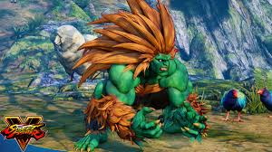

Post #1
Blanka foi originalmente concebido como um personagem humano por Akira "Akiman" Yasuda, e sofreu várias reconceituações durante a produção de Street Fighter II antes de chegar à sua versão final como uma fera selvagem com pele verde e longos cabelos laranja. A história de fundo de Blanka é que ele já foi humano, mas depois de um acidente de avião no Brasil ele sofreu uma mutação (resultando em sua coloração verde e sua capacidade de gerar eletricidade). Blanka foi geralmente bem recebido pelos críticos e fãs, tornando-se um dos personagens mais populares da franquia.